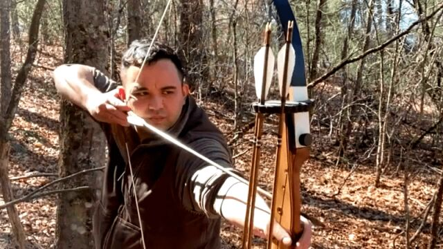
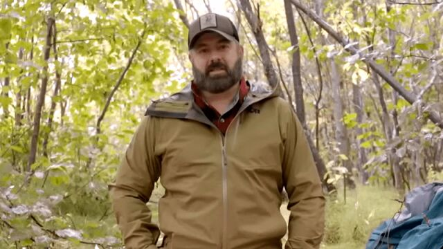
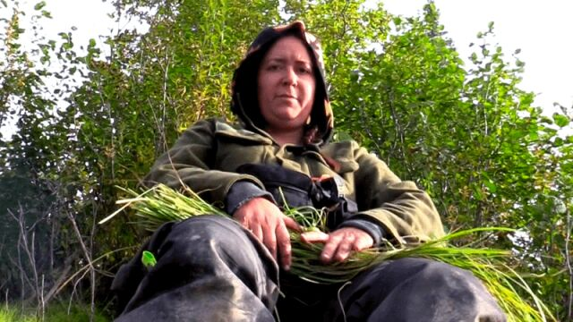
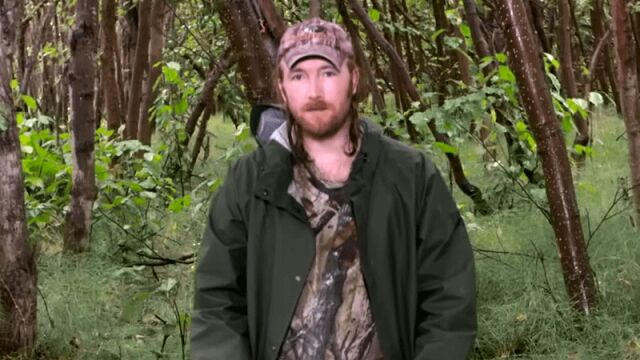
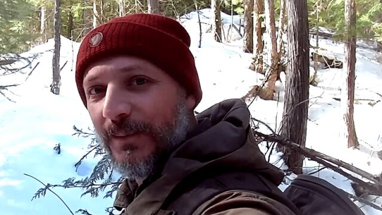

1stWinner
1stWinnerWilliam Larkham Jr.
Fisherman
- Lasted
- 84 days
- Age
- 49
- From
- Happy Valley Goose Bay, Labrador, Canada
Loadout
- Sleeping Bag
- Axe
- Saw
- Knife
- Two-quart pot
- Ferro rod
- Snare Wire
- Fishing Line and Hooks
- Paracord
- Fishing Net
Alone
Arctic Circle · Mackenzie River delta in Arctic, Inuvik, Northwest Territories, Canada · Dropped off 18 Sep 2023 · Premiered 13 Jun 2024
Days each survivalist lasted, in finishing order, and why they tapped out. Every season page uses the same 0–100 day scale so seasons can be compared at a glance.






Who they are, where they're from and the ten items they carried in.
1stWinnerFisherman
Loadout
2ndplaceHumanitarian Aid Worker
Loadout
Wilderness Skills Practitioner
Loadout
Fishing Lodge Owner
Loadout
Game Warden
Loadout
Professional Falconer
Loadout
Adventure Guide
Loadout
Welder
Loadout
Librarian
Loadout
Bowyer And Homesteader
Loadout
How many survivalists chose each item (items grouped into simplified categories).
Air dates, survivalists remaining at the start of each episode, viewers and IMDb rating.
| Ep | Title & opening quote | Aired | Remaining | Viewers (M) | IMDb |
|---|---|---|---|---|---|
| 1 | Enter the Circle“For a man to conquer himself is the first and noblest of all victories.” — Plato | 13 Jun 2024 | 10 | — | |
| 2 | Opportunity Cost“When opportunity comes, it's too late to prepare.” — John Wooden | 20 Jun 2024 | 10 | — | |
| 3 | Fortune“In every walk with nature, one receives far more than he seeks.” — John Muir | 27 Jun 2024 | 10 | — | |
| 4 | Legacy“There is no education like adversity.” — Benjamin Disraeli | 11 Jul 2024 | 8 | — | |
| 5 | Something in the Air“If we believe that tomorrow will be better, we can bear a hardship today.” — Thich Nhat Hanh | 18 Jul 2024 | 7 | — | |
| 6 | Murphy's Law“Little by little, a little becomes a lot.” — Tanzanian proverb | 25 Jul 2024 | 6 | — | |
| 7 | One Pike at a Time“Not everything that is faced can be changed, but nothing can be changed until it is faced.” — James Baldwin | 1 Aug 2024 | 5 | — | |
| 8 | The Marten Chronicles“In every conceivable manner, the family is link to our past, bridge to our future.” — Alex Haley | 8 Aug 2024 | 4 | — | |
| 9 | The Wormhole“In a completely sane world, madness is the only freedom.” — J.G. Ballard | 15 Aug 2024 | 4 | — | |
| 10 | Symphony of Solitude“First fight. Then fiddle.” — Gwendolyn Brooks | 22 Aug 2024 | 3 | — | |
| 11 | Collapse“Worry does not empty tomorrow of its sorrow, it empties today of its strength.” — Corrie Ten Boom | 29 Aug 2024 | 3 | — | |
| 12 | Into the Dark“A man with outward courage dares to die; a man with inner courage dares to live.” — Lao Tzu | 29 Aug 2024 | 3 | — |